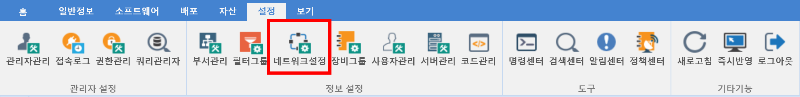
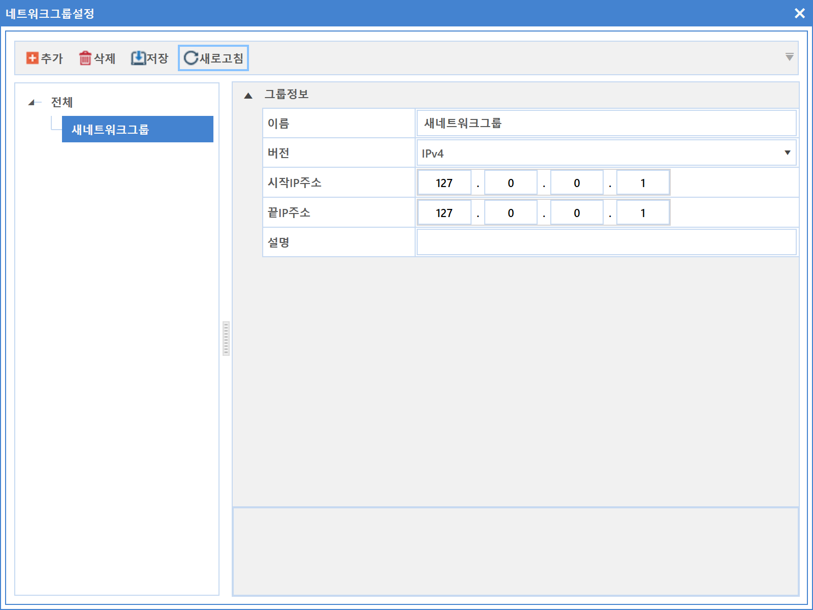
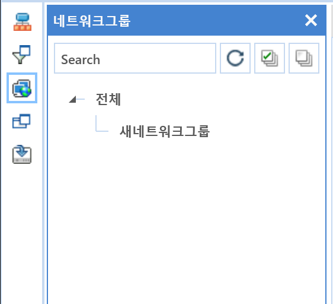

8-2-3. 네트워크 설정
8-2-3. 네트워크 설정
Source: https://www.sweeper.or.kr/etc/manual/8-2-3.html
8-2-3. 네트워크 설정
8. 설정 ›› 8-2. 정보 설정 ››


네트워크 단위로 관리하기 위한 그룹설정을 할 수 있습니다.


설정방법
-
추가버튼을 클릭합니다. 새 네트워크 그룹이 생성됩니다.
 -
부서관리 설정과 같이 해당 그룹을 선택한 후 추가버튼을 클릭할 경우 하위 그룹을 생성됩니다.
-
화면 우측 설정정보를 입력합니다.
-
이름 : 네트워크 그룹명을 입력합니다.
- 버전 : IP 버전을 설정합니다.
- 시작 IP : 그룹 시작 IP를 입력합니다.
-
끝 IP : 그룹 끝 IP를 입력합니다.
-
입력이 완료되면 저장 버튼을 클릭합니다.
참고사항
- 본 메뉴에서는 프린트 기능이 제공되지 않습니다.
- 네트워크 그룹 설정은 에이전트 정보의 IP를 기준으로 자동 분류하기 위한 설정입니다.
설정된 네트워크 그룹은 조직도의 네트워크 구성 목록에서 나타납니다.

© Copyright SWeeper Inc.. All Rights Reserved